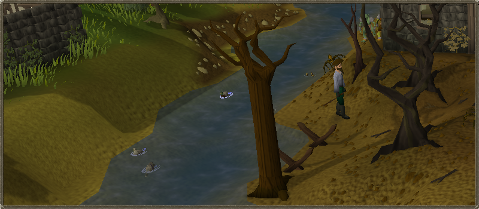

How do I get started?
Welcome to 2009scape Legacy, the dream of the ages, where your memories of childhood Runescape come to life. Unlike Oldschool Runescape, we keep true to the Gower brothers'
vision of the game while also adding our own little mix to it. So, you may be wondering what is the difference between this game and the jagex hosted servers.
Well you have come to the right place and I am glad to be your guide! To get started you make your account using the create an account button on the login screen
and follow it through. Once you have finished this part you are ready for your character creation. Here you will head to the next section to learn about the
different account types.
In 2009scape, we are a constant work in progress, due to keep this in mind and report any bugs you may find by opening an issue on our Gitlabs so it can be worked on
by the community. This project is working towards 100% completion state in our about page found here
While we are remake we have a few functionalities that were not part of the 2009 client which we had added. You can find where all our controls are on the
controls page here.
After you have read the above please check out the rest of this guide as it has information on what is different inside of 2009scape currently
versus the real games. If you have any questions that are not answered here please ask away in discord if they're not already
on the website or in the FAQ.
An easy way to get to Lumbridge court yard is the home teleport, but don't worry we do not have a cool down timer. we are keeping this ingame for debugging. Since we are still in active development having a way for players to get unstuck is crucial.
Many players come in the game not knowing what to expect of how they can play the game. The nostalgic excitement can cause one to spam click buttons in the beginning causing you to miss the important starting message
Once you leave the basement where you first start run over to Hans standing in Lumbridge Castle's courtyard. Once you talk to him it will pull up the dialogue
First click on the "More options option"
And then you will see a list of options.


Changing xp rates
In 2009scape, we have a base rate xp as x5xp. This rate obviously can be changed using this option.
- x1xp Rate ( The Authentic RS rate that many desire who plan on making this their home )
- x2.5xp Rate ( For those players who want the grind with some ease )
- x5xp Rate ( Stated before as being the base xp rate )
You can only change your xp rate once and you are able to only change it before reaching a total level of 50.
Changing Ironman Modes
There are a select few who have come from Reddit and have not played the actual game in over a decade. So, I will go into detail with each mode.
- Ironman/IronWoman Mode
- Hardcore Ironman/IronWoman Mode
- Ultimate Ironman/IronWoman
This account mode is the basic of the three account types. Ironman/IronWoman are unable to trade any other player so they are completely self efficient. They also can not use lootshare whatsoever which means they are still stuck collecting everything on their own.
Following the restrictions of regular Ironman/IronWoman mode the only restriction these players have is they are restricted to one life. Unlike Regular Runescape the account mode will only go back down to regular Ironman/IronWoman instead of deleting your account.
Like regular Ironman/IronWoman mode, the only other difference is ultimate Ironmen/IronWomen can not bank items. However, they can note items on bank booths and unnote the items.
In Runescape there were plenty of different ways to make money and I know it's a tad difficult hopping into the time machine and coming back to this era forgetting how in the worlds people made money. Not to worry we have you covered with some basic money making methods that may later have full guides but for now a little glimpse into what 2009scape has to offer.
- How do I get started?
- About Page
- Controls
- Credit System
- The Commands
- Skill Cape Perks
Jobs

In the year of 2009, Runescape had a job system to help newer players get used to the skill system. You came right out the tutorial Learning the ropes, just to realize that you had 25gp to your name with just a few starter tools to get you started. Most of the tutors inside of Lumbridge are trying to get you to work for them but I know right away that can be intimidating. If I were you, I would head straight to the woodcutting tutors and get your first job. While you are level one woodcutting you will most likely have to cut around 20 regular logs and give you around 5-6k.
Pyramid Plunder
This sneaky thieving mini game can end up getting you a pretty penny when first starting. As it only requires 30 thieving to get started! There are plenty of rewards to get form the mini game one being pharaoh's sceptre.
| Type |
Material |
Gold |
| Comb | Ivory | 50gp |
| Comb | Pottery | N/A |
| Comb | Stone | N/A |
| Comb | Gold | N/A |
| Seal | Ivory | N/A |
| Seal | Pottery | N/A |
| Seal | Stone | 150gp |
| Seal | Gold | 750gp |
| Scarab | Ivory | N/A |
| Scarab | Pottery | 75gp |
| Scarab | Stone | 175gp |
| Scarab | Gold | 1k |
| Statuette | Ivory | N/A |
| Statuette | Pottery | 100gp |
| Statuette | Stone | 200gp |
| Statuette | Gold | 1,250gp |
Agility Pyramid
You will need a way to make sure you don't die of the desert heat and a minimum of 30 agility to get started.
The pyramid is straight-forward and when you bring Simon the pyramid top he will give you 10k each.
Make sure you bring waterskins
Stronghold of Security
Make your way over to the stronghold of security underneath the Barbarian village. Make your way through the mazes answering the player safety questions Once you have made it through the maze there is a free 10k and some colorful/fighting boots with your name on it
Gnome Gliders
One of the biggest obstacles of Runescape in 2009, was attempting to go over the white wolf mountain or you could
walk all the way to edgeville pull the wilderness lever, pull it again and end up in Ardy. Tree gnome stronghold is not
implemented in the game yet so we consider the glider free game for those who want to use it. You have several locations
you can teleport to right away.

Note: This will be removed once the quest is implemented
Spirit Trees
Just like the Gnome Gliders, the Spirit Trees are unlocked as of right now because Tree gnome village quest is not implemented yet!

Note: This will be removed once the quest is implemented
Canoes
The travel method a lot of people forget about are the canoes!

Fairy Rings
I won't be going into super detail of where the fairy rings teleport you to, but I will say that in 2009scape due to Fairy tale quest not being added, the fairy rings are locked behind only the lost city quest.
Quests
One major thing that most people on the server forget when starting the server is that quests exist in the game. While most rsps do not really have quests this is a remake of the year 2009 so the plan is to add all the quests eventually in the game. As pointed out earlier on this page is that when a quest is not implemented you can use some of the travel methods without needing to complete the quest. You can find all the quests inside the website under quest help. The quest cape works as well. Once a new quest is added you will no longer be able to wear the cape until that quest is completed.
Diaries
Recently we had an update that added the Diaries to the game! There is now certain content locked behind these achievements. With methods of fast traveling completing the Lumbridge/Draynor diaries can land you an explorer ring which teleports you to the farming patches! There are plenty of other perks of completing the diaries! So click the little green star in your quests tab to check them out!
Dailies
With a new system for Dailies being added the dailyscape grind has come to 09. Do not worry, this will not consume your entire gameplay experience since there is plenty of stuff to do inside of the game. Just to name a few dailies there are shooting stars, penguin hide n seek, and things like battlestaves being in stock. There will be guides soon on our local Wiki.
Slayer Rerolls
Being a Community we are always voting in Quality of life updates that help players releive a partial bit of the tedious unnecessary grind of their game play experience. In 2009scape, we have allowed as long as you are within the dialogue to reroll the slayer task. If you click out the game has noted that you had accepted the slayer task.
Let us know on discord/matrix if anything should be added to the getting started guide or if any other pages should be linked from this page.

More articles in
Game Guide
|
|